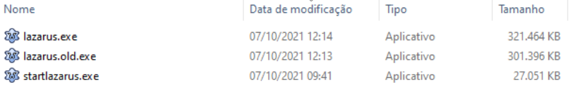
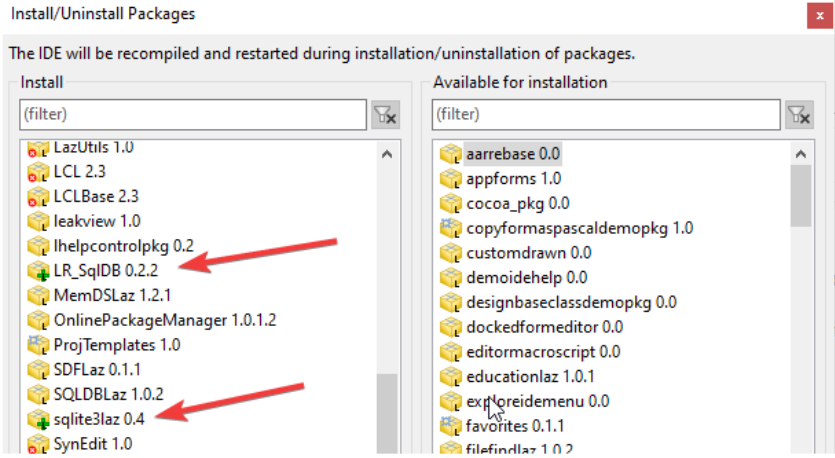

Antes de prosseguirmos saiba que iremos instalar vários pacotes, eles são os “addons” que acompanham o código do Lazarus, mas não são instalados por padrão. Alguns deles quando instalados podem “quebrar” a IDE se houver alguma incompatibilidade com o compilador ou dependências de outros pacotes. Se isso acontecer, saiba que há no diretório de instalação do seu Lazarus um arquivo “lazarus.exe” que corresponde ao que está em uso e um outro - backup - chamado “lazarus.exe.old”:

Numa hipótese de instalar um pacote novo e a IDE deixar de funcionar, simplesmente execute o programa “lazarus.old.exe” e aparecerá esta mensagem:
Então clique em Update Info(Atualizar informações) e o sistema irá retornar ao estágio anterior quando as coisas funcionavam.
Se a IDE quebrou por causa de pacotes que tentou instalar, aproveite para ir em Packages|Install and uninstall packages para identificar os pacotes recém instalados - que provavelmente foram os problemáticos - e então removê-los. Note que às vezes é possível identificá-los porque eles ficam marcados com um ícone de “+” ao lado dos nomes indicando que foi uma tentativa frustrada de instalação e eles ainda permanecem marcados para serem instalados numa próxima compilação, veja-os:

Marque os pacotes problemáticos para remoção e confirme para que a IDE seja novamente recompilada. Depois disso, não execute mais o “lazarus.old.exe” e sim o atalho atual que aponta para “lazarus.exe”.
Compilar a IDE pode soar estranho, mas quando você instala ou desinstala certos tipos de pacotes é isso o que acontece. Quanto mais pacotes você instalar, mais pesado será sua IDE, por essa razão instale pacotes com parcimônia, instale apenas os que irá usar.
Dica:Você pode ter uma segunda instalação do Lazarus noutro diretório para experimentar coisas novas e deixando sua instalação principal separada apenas para os sistemas em produção. Essa é uma boa prática.